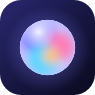

Thought Catcher
Say a thought; it gets sorted into ideas, tasks, journal and reminders. Version 2.0.0.
Install on iPhone
- Open this page in Safari.
- Tap Share, then Add to Home Screen.
- Open it from the new icon.
Install on Android
- Open this page in Chrome.
- Tap the menu, then Install app.
- Open it from the new icon.
Privacy
- Thoughts stay on this phone. No account.
- The assistant model downloads once, after you agree, and runs here.
- Speech: on this phone, or Apple's or Google's service if you pick it.
- Your own key sends the text you file to that provider only.
Made by
Ion Vovos / Nexa SystemsMIT licence
Source codegithub.com/ionvovos/thought-catcher